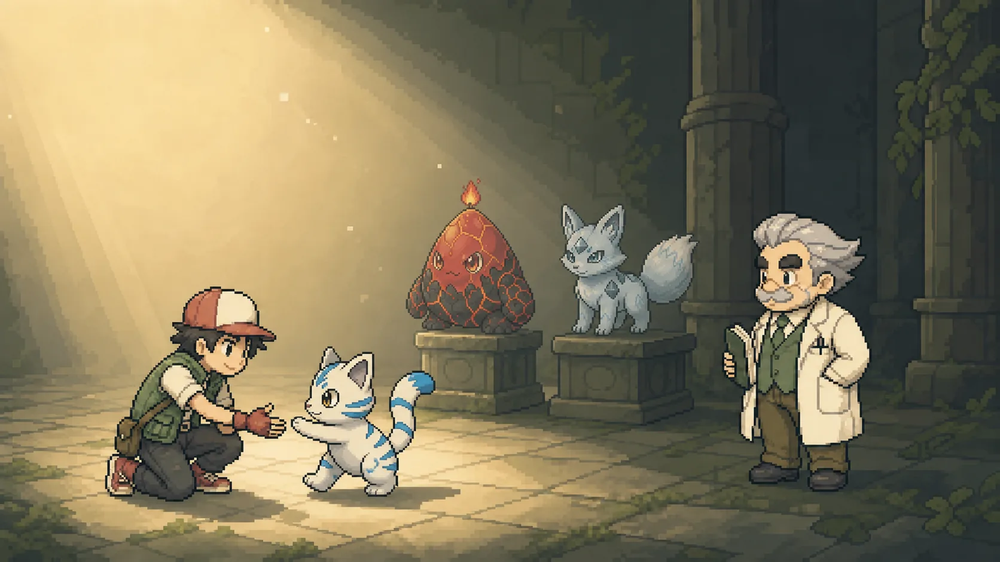

Retour en classe

Vous incarnez le personnage de Sachez, jeune homme de 25 ans, habitant du paisible village de Bois-de-France, qui commence à s'intéresser aux sujets politiques, et curieux d'en apprendre plus.
▼
À l'été 2027, dans le paisible village de Bois-de-France, Sachez réalise sa promenade quotidienne…
▼
…lorsqu'il tombe par hasard sur un étrange document d'un ancien professeur :
« Polimon 2027 - Éduquez-vous tous !
Les élections présidentielles de 2027 approchent à grands pas, et avec elles les idées politiques se répandent à travers le pays.
Adoptez les Polimons qui vous ressemblent et amenez-les au plus haut de l'Élysée ! »
- Professeur Chen

Professeur Chen, comment allez-vous ? Je suis tombé sur votre prospectus concernant les Polimons… Pouvez-vous m'en dire plus ?
▼Sachez ! J'imagine que tu reconnais ton ancienne salle de classe. C'est une excellente question. Laisse-moi t'expliquer…
▼
Quand une personne croit fermement en une idée politique, alors celle-ci prend forme et se matérialise comme Polimon. Les Polimons sont des idées qui ont pris vie : ils s'adoptent, ils s'affrontent, et bien sûr… ils évoluent.
▼Lorsque son dresseur maîtrise parfaitement les idées politiques qu'il représente, le Polimon évolue. Chaque Polimon connaît 3 niveaux d'évolution « 3P » : Philosophie, Perspective et Programme.
▼Par ailleurs, les idées portées par les Polimons s'expriment toujours dans les mêmes 5 dimensions : l'individu, la société, l'économie, l'écologie et la géopolitique.
▼En cette période d'élection, de grands dresseurs répandent leurs idées, ou Polimons, par milliers à travers le pays. Cependant, peu de gens cherchent vraiment à les domestiquer, et ne peuvent donc pas voter de manière éclairée…
▼
Je veux aussi devenir un grand dresseur Polimon, et faire grandir mes propres idées politiques !
▼Haha ! Excellent Sachez, je reconnais là bien ton enthousiasme. Alors adopte les idées qui te ressemblent, maîtrise ces idées pour les faire évoluer, et amène-les au sommet de l'Élysée !
▼
Mais avant tout, commençons par le commencement : choisis un Polimon de niveau 1 (Philosophie) qui te correspond. Un Polimon Philosophie se choisit avec le cœur, avant de se choisir avec la tête !
▼
Sachez observe longuement les trois compagnons… Toi aussi : survole les 5 dimensions au-dessus de chaque Polimon pour découvrir sa philosophie, puis clique sur celui qui te ressemble. Choisis avec le cœur : le choix est définitif !
▼
Excellent choix, Sachez ! Désormais, parcours le monde pour confronter ton Polimon à d'autres idées afin de le faire grandir. Rappelle-toi : le combat des hommes est vil, seul le combat des idées compte !
▼L'aventure continue…
Tu connais désormais les Polimons. Découvre les 39 idées recensées par le Professeur Chen :
📕 OUVRIR LE POLIDEX ▸Le Diner de famille
Cet episode est en cours d'ecriture… Il sera bientot disponible !